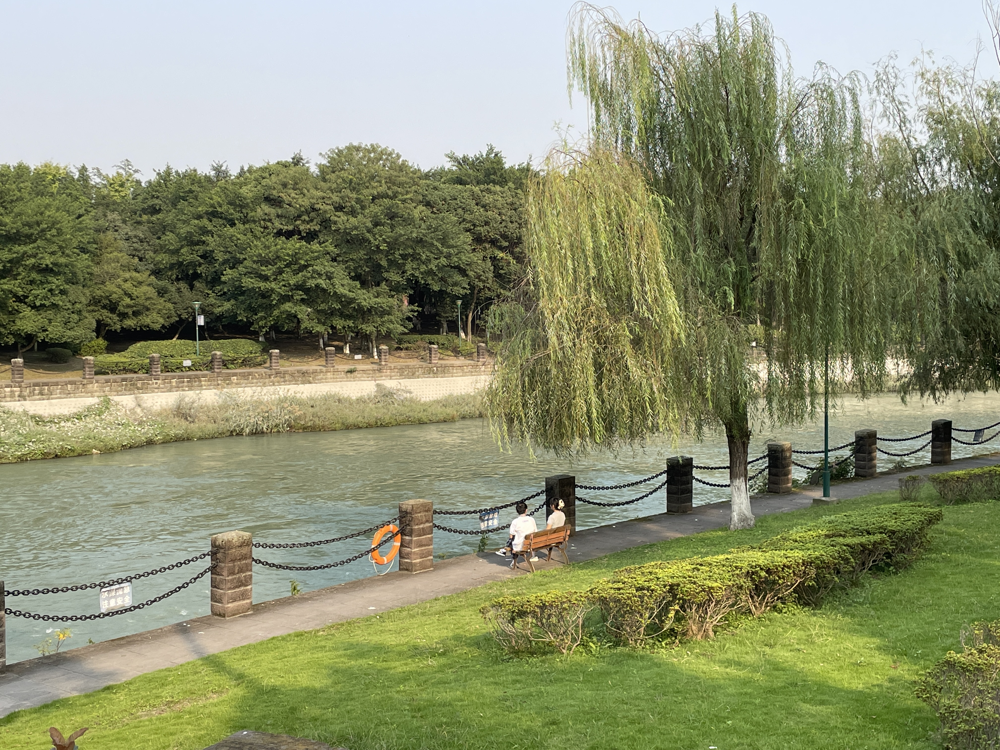

我的学校
| 四川大学文学与新闻学院具有悠久的历史。早在四川大学的前身锦江书院（1704年）和尊经书院（1875年）设立之初，即开设中文学科。1896年四川总督鹿传霖创办四川中西学堂时，“分课华文、西文、算学”。1931年国立四川大学成立，设文学院、理学院、工学院、农学院等几大学院。1950年代院系调整撤销文学院建制，分为中文、外文、1994年恢复文学院，包括中文、历史等系.1998年又进行调整，将原四川大学文学院中文系与原四川大学新闻学院合并，组建成四川大学文学与新闻学院。2013年，学院进入首批十所与地方省委宣传部门共建（“部校共建”）新闻学院序列，加挂四川大学新闻学院院牌。 | ||
|  | 四川大学文学与新闻学院是四川大学文科教学和科学研究实力最雄厚的学院之一。以建设高水平研究型学院、培养高层次人才为目标，形成了以本科生教育为基础，研究生培养和科学研究为重点，其他办学形式为补充的办学格局，现有中国语言文学、新闻传播学、艺术学理论等3个一级学科，其中中国语言文学为国家重点一级学科、国家文科基础学科人才培养和科学研究基地。学院未来的学科发展将紧密围绕“中国语言文学与中华文化全球传播”学科群一流建设方案展开。力争在巩固和完善现有学科的基础上，以构筑全球化语境下的中华文化立体化传播体系为背景，开展世界一流学科建设。到本世纪中叶，将“中国语言文学与中华文化全球传播”学科群建设成为有川大风格和中国特色的国际学术高地。 | |